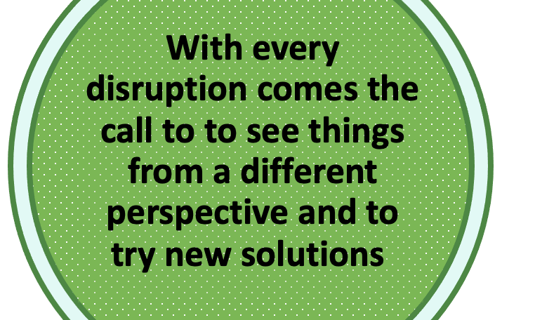

I'm Beatrice
a True Hybrid.
Leadership Development and Transformational Coach.

I'm a Transformational Leader. I support people and businesses with coaching and co-designing new strategies and approaches. I'm passionate about People, Marketing, Communication and Digital Innovation.
In the midst of uncertainty, complexity and disruption I have a track record of inspiring change and of empowering people to embrace it. I consider the human factor in transformation to be the most relevant.
I value and build close and authentic relationships. I thrive on helping people become more aware and to express their full potential. I use my innate creativity to impact and innovate. My curiosity to learn and evolve is boundless. I use design thinking and a coaching approach to promote collaboration within teams and across organizations.
Living in different countries and working in different roles, has broadened the way I see the world. I'm a pro when it comes to navigating multi cultural teams. I embrace inclusion and diversity and foster a safe environment where people can learn, contribute and challenge the status quo.
If you want to connect, curious about my CV or if you want to schedule some time with me please reach out.
EMAIL ME